현재 앱의 실제 문항·선택지를 문서용 2열로 재배치 · 왼쪽 → 오른쪽 순서 · 응답 선택은 비운 상태
이용하거나 참여하지 않은 항목은 ‘해당 없음’을 눌러 주세요.
6~11번: 행사장·접근성·숙소·음식·기념품·앱
이용하지 않으셨다면 ‘해당 없음’을 눌러 주세요.
12번: 분야별 한 개 이상 · 복수 선택 가능 · 듣지 않은 묶음은 해당 없음
묶음마다 하나 이상 선택하며, 듣지 않은 묶음은 ‘해당 없음’을 선택합니다.
13~19번: 부대행사·재참가 의향·자유 의견·성별·연령대 · 15~17번만 선택 응답
참가하지 않은 행사는 ‘해당 없음’을 눌러 주세요.
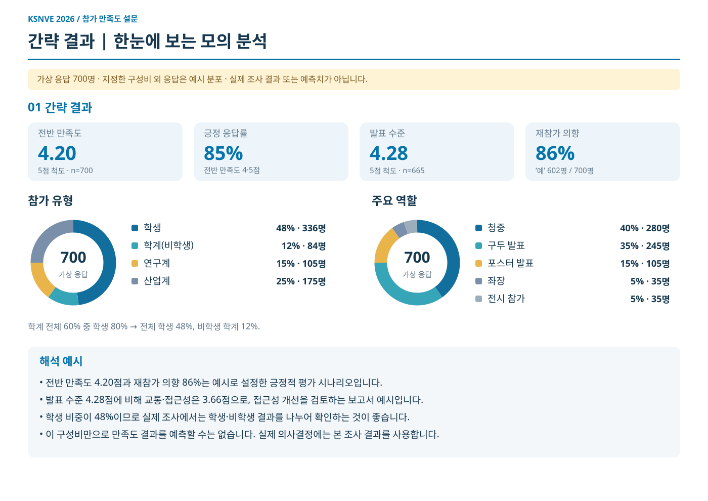
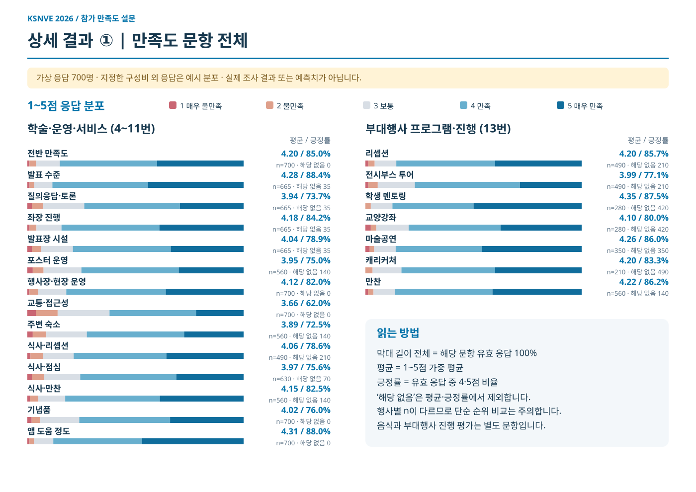
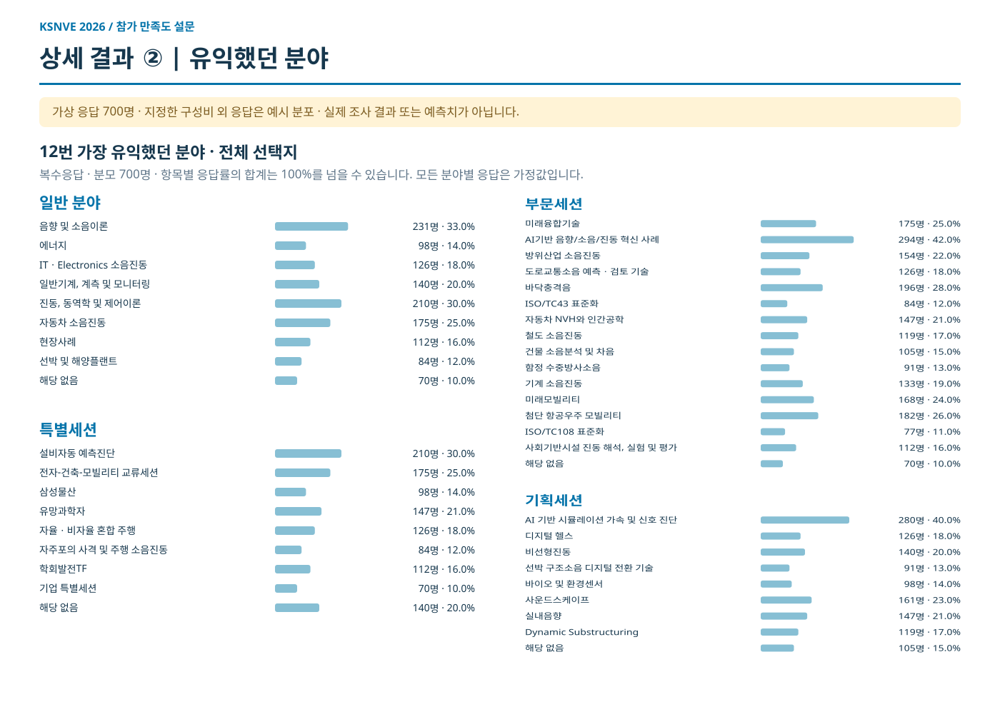
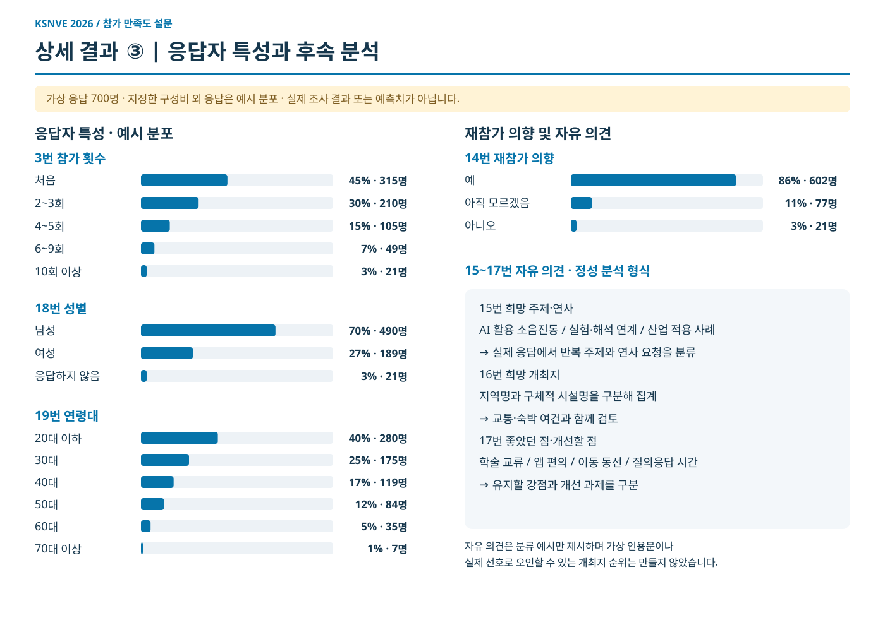
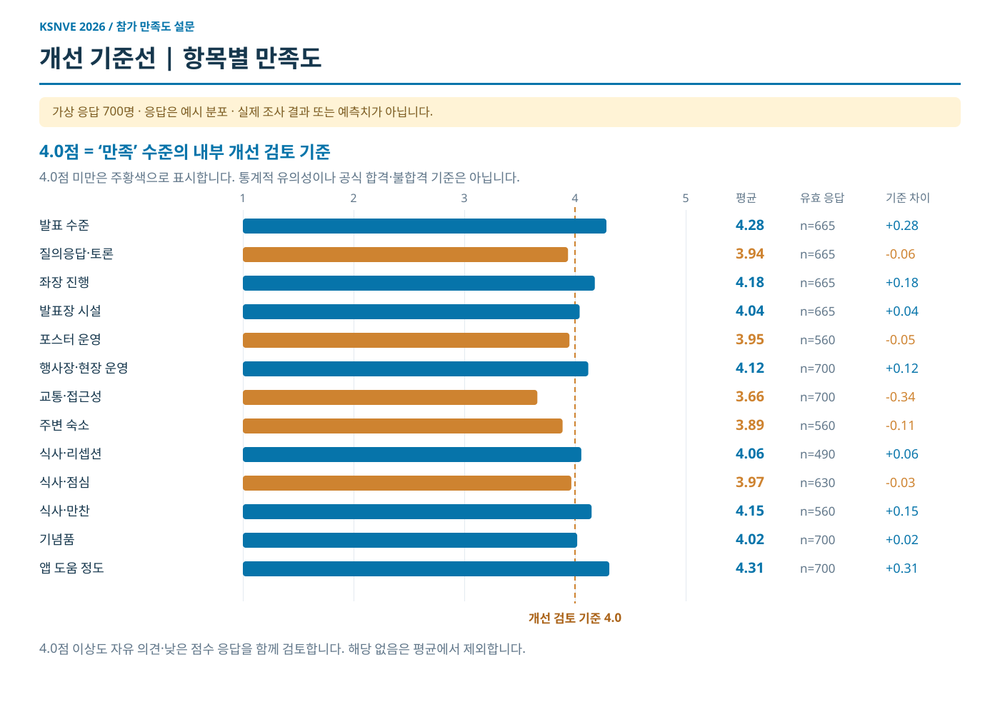
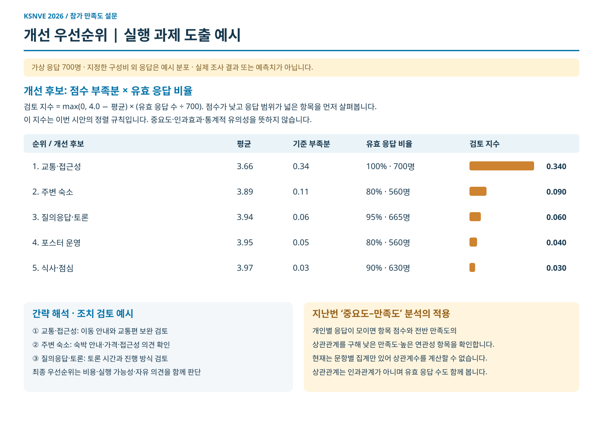
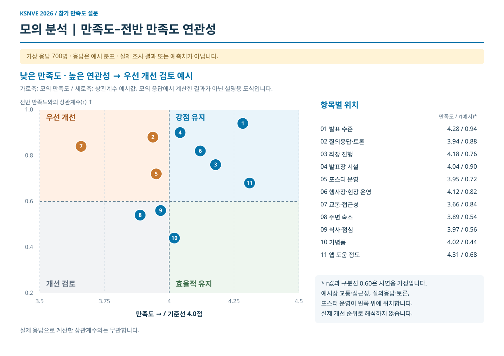
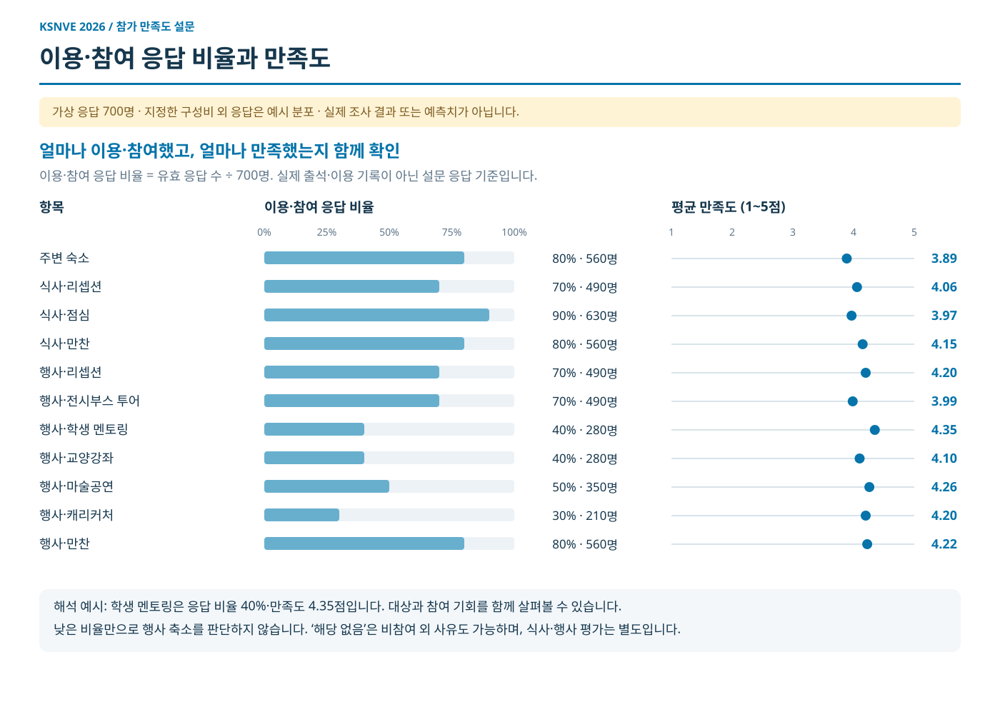
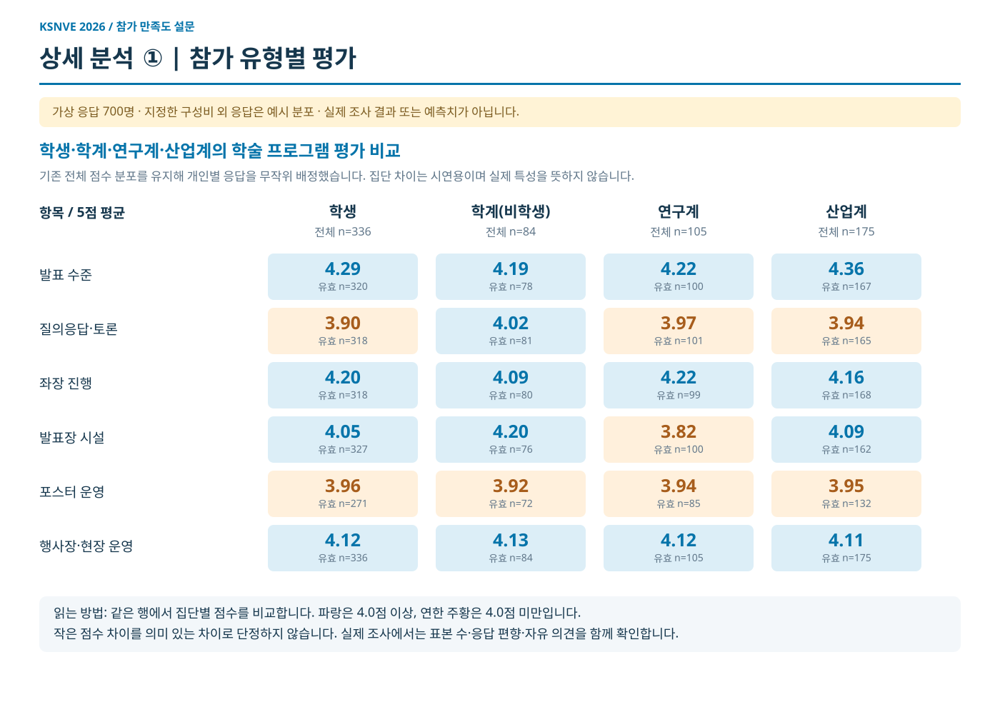
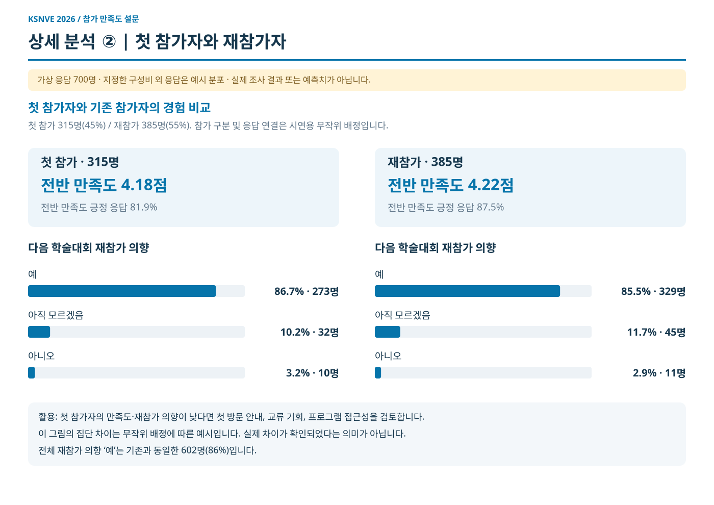
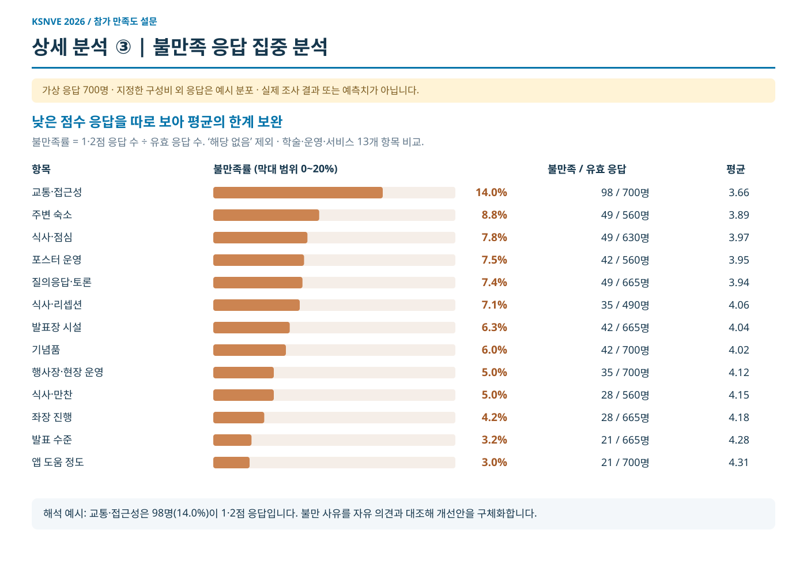